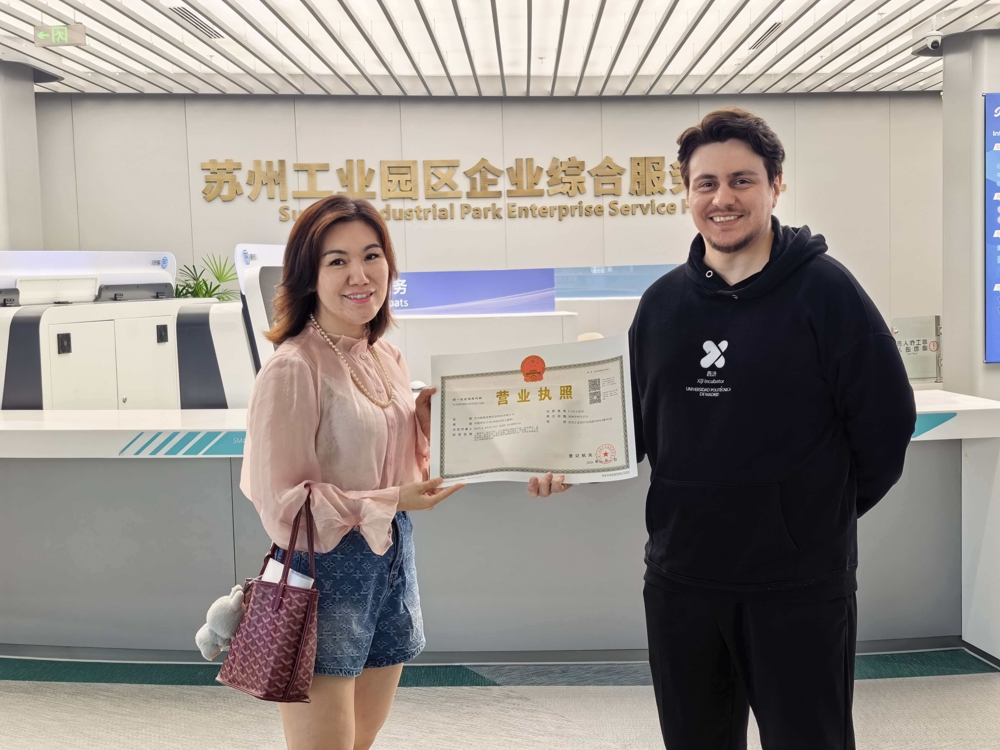
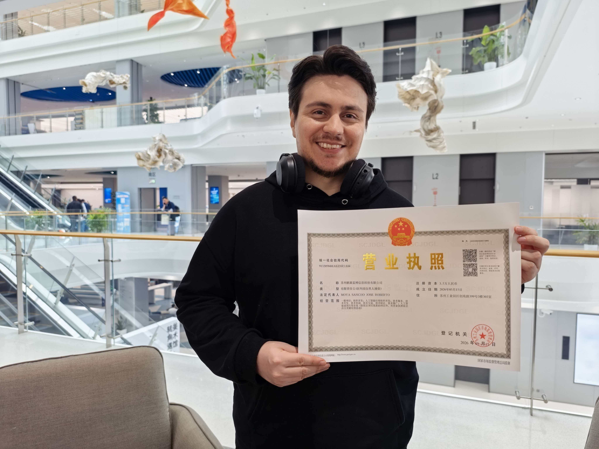
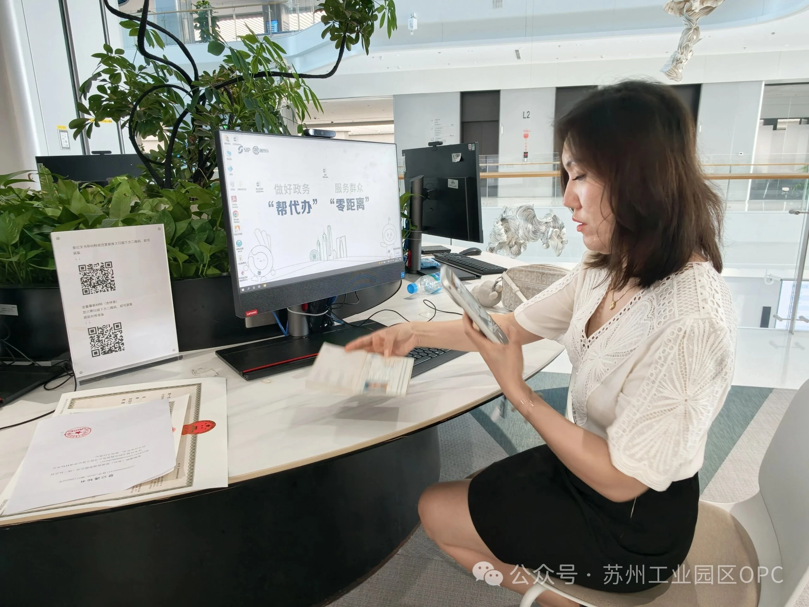
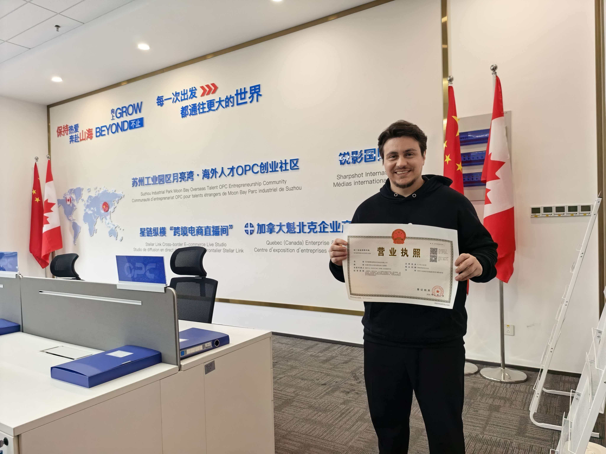
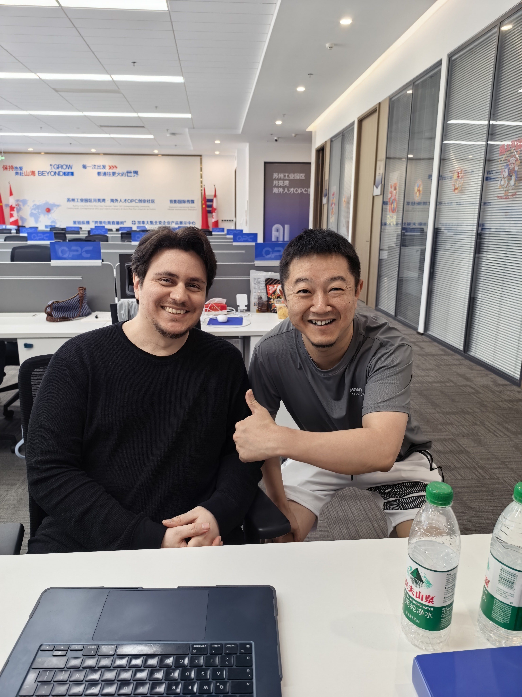

Our work helping overseas entrepreneurs launch companies in China has been featured across government publications, university media, and news outlets. Here’s what they’re saying.
Featured Story
First Foreigner OPC License

Official Government PublicationSIP Science & Technology Innovation Commission (SIP科技创新)
Park Issues First Foreigner OPC Business License
May 2026
Foreign entrepreneur Rob Moya (Moya Sancho Jose Roberto) successfully completed all registration procedures with the help of the Moon Bay OPC Entrepreneurship Community, obtaining the first foreigner OPC business license in Suzhou Industrial Park — a key milestone in the park’s global aggregation of innovative talent.
Selected coverage from government, university, and media outlets across Suzhou and SIP.
OPC Communities: Connection Over Desks
月光湾海外人才OPC创业社区 (Official WeChat) · August 2026
Founder Jessica Chang responds to Xiong'an's new OPC support policies, arguing that the real value of OPC communities lies in connections, not desks — order matching, individual collaboration, and computing power are the true metrics of success.
From Morocco to Suzhou: An Entrepreneur’s Cross-Cultural Journey
此间创 (WeChat Channels) · August 23, 2026
Founder Jessica Chang interviews a Moroccan entrepreneur who stepped out of her comfort zone to start a business in Suzhou, exploring the collision and opportunities between Chinese and Moroccan business cultures.
Founder Jessica Chang discusses why business owners are the critical factor in enterprise AI adoption — overcoming the fear of losing control by starting with hands-on experience.
Suzhou Industrial Park Features Moon Bay OPC Community
苏州工业园区 (Official WeChat Channels) · August 8, 2026
The official Suzhou Industrial Park WeChat Channels account published a video showcasing the Overseas Talent OPC Community office and its first operational period (April–August 2026), featuring the community’s display hub and workspace.
Founder’s Philosophy: Why Choosing ‘Small’ Is the Smartest Long-Term Strategy
月光湾海外人才OPC创业社区 (Official WeChat) · August 2026
Founder Jessica Chang draws on nearly 100 cases of overseas entrepreneurs in the Moon Bay OPC community to argue that deliberately choosing a lightweight business model is more sustainable than chasing scale — and why OPC is the ideal structure for super-individual entrepreneurs.
Suzhou Hengtai Launches Zero-Space OPC Community at Dongyan Siji Apartments
苏州恒泰集团 (WeChat Channels) · July 28, 2026
Suzhou Hengtai Group officially opens the "Zero-Space OPC Community" at Dongyan Siji Apartments — a new talent housing and OPC entrepreneur incubator. Miss Chang appears in the video being interviewed about the community's role in the OPC ecosystem.
Founder Jessica Chang Interview: OPC Community Partners with SIP Talent Apartments
张志群 (WeChat Channels) · July 26, 2026
Founder Jessica Chang is interviewed at the signing ceremony between the SIP Overseas Talent OPC Community and the park’s talent apartments — a partnership that provides world-class accommodation for returning overseas entrepreneurs.
OPC Community Signs Cooperation Agreement with SIP Talent Apartments
张志群 (WeChat Channels) · July 26, 2026
Coverage of the official signing ceremony between the Moon Bay Overseas Talent OPC Entrepreneurship Community and SIP talent apartments, establishing a partnership to provide housing for overseas entrepreneurs.
Moon Bay OPC Signs Cooperation Agreement at Hengtai Zero-Space Community Launch
月光湾海外人才OPC创业社区 (Official WeChat) · July 25, 2026
Founder Jessica Chang signs a symbiotic cooperation agreement with Hengtai Leasing and Qingchuanggang at the Zero-Space OPC Community opening ceremony, expanding the community's service scenarios with shared event spaces, startup showcases, and talent housing for overseas entrepreneurs.
OPC Entrepreneurship Philosophy: From Product Mindset to Business Mindset
月亮湾海外人才OPC创业社区 (Official WeChat) · July 2026
Founder Jessica Chang explains how AI lowers development barriers but raises entrepreneurship barriers, and why OPC is a validation stage — not a permanent solo state. The community provides industry resources, mentors, partners, and policy support.
Moon Bay OPC Joins Suzhou Industrial Park Development Promotion Association
园区进化论 (WeChat) · July 2026
Feature on Moon Bay OPC joining the SIP Development Promotion Association, highlighting founder Jessica Chang’s 18 years of cross-cultural project management and 8 years in global healthcare.
First-Day Registration: Morocco Entrepreneur Mia Receives OPC License in Record Time
苏州工业园区一站式服务大厅 (WeChat) · July 2026
Moon Bay OPC’s world-class service delivers again: Mia, an entrepreneur from Morocco, applied for her foreigner OPC business license and had it approved the very next day. A testament to the community’s efficient, full-process support for international founders.
Suzhou Industrial Park Issues First Foreigner OPC Business License
引力播 / 苏州新闻 (Suzhou News) · June 2026
Suzhou News covers the milestone of Rob Moya receiving the first foreigner OPC business license in SIP, highlighting the park’s commitment to attracting international entrepreneurial talent.
China vs US AI Large Models: A Costa Rican Entrepreneur’s Perspective
此间创 (WeChat Channels — Documentary) · May 2, 2026
Rob Moya shares his firsthand experience comparing Chinese and American AI large language models, discussing his one-person company model and journey as a foreign founder in Suzhou.
Real moments from our community — from the first OPC license issuance to daily operations at the Enterprise Service Hub.




Also Featured In
Additional coverage across Suzhou and SIP media outlets.
苏州工业园区发布 (SIP Daily News)June 2026
苏报融媒 (Suzhou Daily Media Group)June 7, 2026
苏州OPC发布 (Suzhou OPC Release)June 2026
苏州新闻 Video ChannelJune 9, 2026 · 189 likes, 375 shares
In Their Own Words
Real reflections from the entrepreneurs and leaders shaping Moon Bay OPC.
From proposing the entrepreneurial idea to officially landing, the smooth completion of company registration makes me full of confidence in carrying out innovation and entrepreneurship in China.
— Rob Moya, First Foreigner OPC License Recipient, Suzhou Industrial Park
The park has an excellent industrial foundation, an open innovation environment, and complete talent policies — this is the core reason we chose to establish ourselves here.
— Jessica Chang, Founder, Moon Bay OPC
Watch
China vs US AI: A Founder’s Perspective
Rob Moya sits down with Jessica Chang’s 此间创 documentary channel to discuss the differences between Chinese and American AI large models, and his experience building a one-person company in Suzhou.
此间创 Documentary Interview
Watch on WeChat Channels
Press & Media Inquiries
Working on a Story?
Jessica Chang
Founder & Community Manager, Moon Bay OPC
We’re happy to provide expert commentary, founder interviews, and background on OPC registration, cross-border entrepreneurship, and the Suzhou Industrial Park ecosystem.